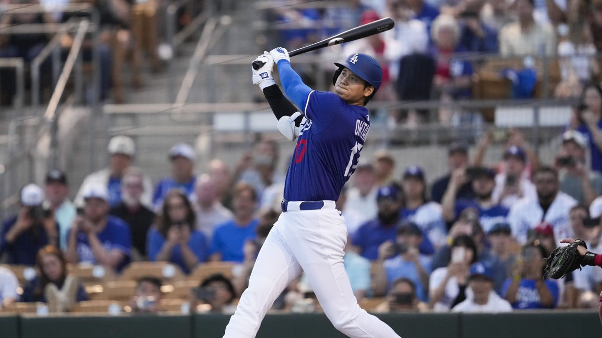

What the numbers say about Shohei Ohtani’s impact in year 2 with the Dodgers

The big picture
Shohei Ohtani’s first season with the Dodgers was full of spectacle: towering homers, elite velocity, and his uncanny ability to make routine games feel like major events. But 2025 had something which put him in a less than ideal situation: a UCL injury which sidelined his pitching, limiting him to DH duties.
Some thought losing half his value would hurt the Dodgers. Instead, he proved them wrong, shifting the narrative. Shohei might not be throwing 100 this season, but his bat is doing more than enough heavy lifting, and he has the numbers to back it up.
Ohtani hasn’t pitched in 2025 yet but he’s still the most impactful player on the field. Whether it’s a 440-foot no-doubter or a disciplined two-strike walk, he’s doing things most hitters can’t. Let’s dive into the analytics behind his offensive explosion in Year 2 with the Dodgers.
Ohtani at the plate: the raw output
| Stat | 2024 | 2025 | League avg |
|---|---|---|---|
| wOBA | .387 | .413 | .318 |
| xwOBA | .374 | .402 | .318 |
| SLG / xSLG | .654 / .627 | .689 / .675 | .410 / .400 |
| K% / BB% | 24.4% / 10.4% | 22.1% / 11.9% | 22.5% / 8.4% |
Ohtani is not just hitting well, he is outperforming his expected stats. His xSLG of .675 places him among the elite power hitters in the league, while his reduced strikeout rate and improved walk rate show growth in plate discipline.
What stands out most is that despite his power, he’s not over-relying on it. He’s walking more, chasing less, and making better swing decisions. He is any pitcher’s nightmare (well, maybe not Paul Skenes’).
Key takeaway: has he improved his discipline or power? Is he over- or underperforming his expected stats?
Under the hood: plate discipline changes
This tells us two key things:
- He’s swinging at better pitches, evident by fewer chases and more in-zone swings.
- He’s making more contact when he does swing.
The result? More walks, fewer strikeouts, and consistently high-quality contact.
Splits and situational impact
Ohtani’s splits show he’s not just feasting on fastballs or right-handed pitchers. He’s crushing everything.
| Situation | wOBA | OPS |
|---|---|---|
| vs RHP | .421 | 1.089 |
| vs LHP | .389 | .985 |
| RISP | .445 | 1.112 |
| Late & close | .453 | 1.139 |
| Home | .432 | 1.144 |
| Away | .398 | 1.012 |
These numbers show that he is performing better in pressure moments and with runners on base. He is a reliable run creator for the 2025 Dodgers, not just someone who is Instagram-reel worthy.
The Ohtani effect
Here’s where we zoom out a bit. Shohei’s presence reshapes how pitchers approach the entire Dodgers lineup:
- Zone % to hitters before him is down, with pitchers trying to navigate the top carefully.
- Freddie Freeman’s walk rate has increased with Ohtani batting behind him.
Even when he’s not hitting homers, his presence forces tougher pitch decisions across the board. He expands the Dodgers’ margin of error with every plate appearance.
More impact: WPA and run value
That +2.91 WPA means he is directly responsible for almost 3 additional wins for the Dodgers. Now combine that with elite level performance across pitch types and clutch moments and you’ve got an MVP-level offensive profile. Ohtani remains a unicorn. Not only does he hit harder than anyone else, he’s also fast enough to leg out infield hits and convert doubles into triples.
Many assumed during the preseason that a one-way Shohei would mean a step back, but if this is the “limited” version of him, what does his peak even look like?
Even as a full-time DH, he’s among the top offensive players in baseball. His WAR is climbing, his process is getting cleaner, and he’s showing no signs of slowing down.
Is this the best version of Ohtani we’ve seen yet?